散布図データを持つ3D棒グラフ
3D-Bar-Symbol
サマリー
このグラフはHPI(住宅物価指数、Home Price Index)の変化を示す3D棒グラフと失業率を示す3D散布図を組み合わせたものです。このデータは、複数の異なる年のセンサスディビジョン(アメリカの国勢調査の区分け)です。どちらのプロットもZ値を使用したカラーマッピングが適用されています。
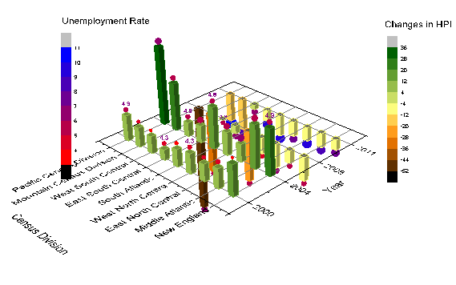
必要なOriginのバージョン: Origin 2015 SR0以降
学習する項目
このチュートリアルでは、以下の項目について解説します:
- 3D棒グラフを作成する
- 3D棒グラフに散布図を追加する
ステップ
- Originのメインメニューからファイル：開くと操作し、<Origin EXE フォルダ>\Samples\GraphingのパスからHome
Price Index Changes & Unemployment Rate.opjを開きます。
- Home Price Index Changes & Unemployment Rateブックをアクティブにし、列A、列B、列Cを選択してから作図：3D：3D棒グラフと選択して3D棒グラフを作図します。
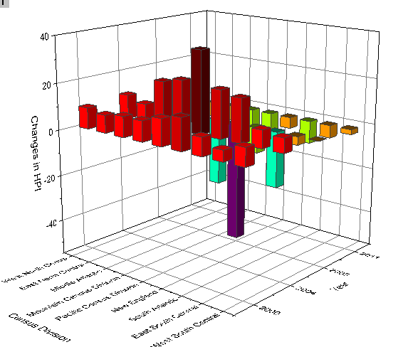
- グラフのレイヤアイコンを右クリックし、コンテキストメニューから作図のセットアップを選びます。作図のセットアップダイアログで列A、B、G1をそれぞれX、Y、Zに設定します。追加ボタンをクリックしてこのプロットを現在のレイヤに追加します。それからOKボタンをクリックして、作図のセットアップダイアログを閉じます。
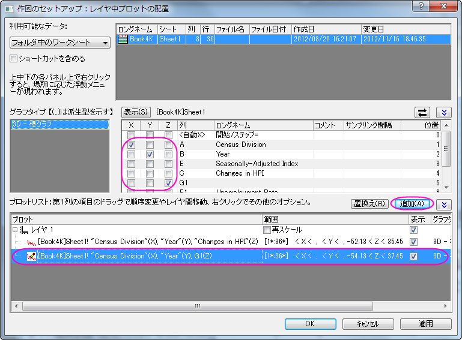
- グラフをダブルクリックして、作図の詳細ダイアログを開きます。このダイアログで左側パネルの2番目のプロットを選択し、作図形式を3D散布図/トラジェクトリ/ベクトルに設定します。
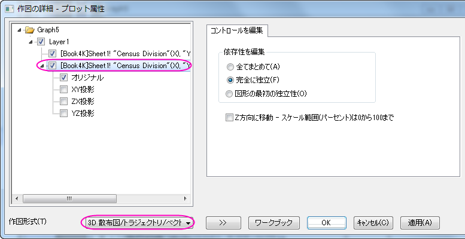
 |
作図のセットアップダイアログで3つのパネルを全ての表示するために ボタンをクリックしてグラフタイプパネルを開き、再度をクリックして利用可能なデータパネルを開きます。 ボタンをクリックしてグラフタイプパネルを開き、再度をクリックして利用可能なデータパネルを開きます。
詳細な情報は作図のセットアップで作図を参照してください。
|
- 左側パネルでオリジナルを選択してから右側パネルでシンボルタブを開きます。そして、サイズと色にCol("Unemployment
rate")を選択し、縮尺倍率の大きさを2にします。
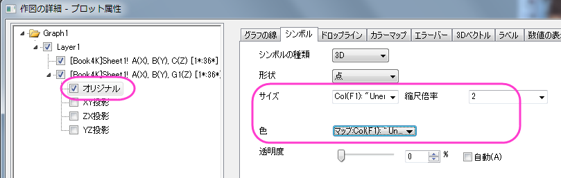
- カラーマップタブに切り替え、レベルと塗り色を下図のように設定します。
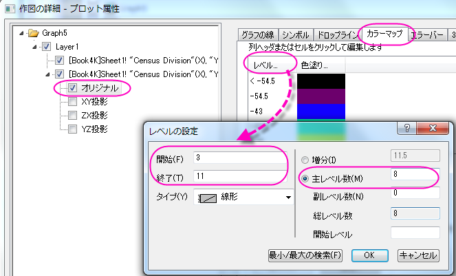
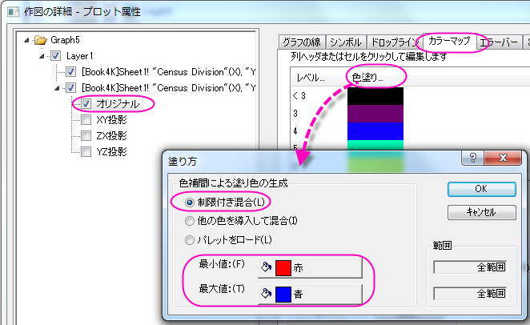
- ラベルタブを開き、有効にするチェックを付けます。色やサイズを図のように設定し、ラベル形式には「Col(F)
」、位置には「上」を設定します。
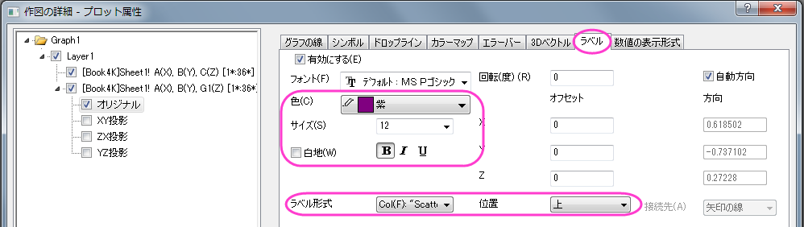
- 数値の表現形式タブに切り替え、小数点桁数を0にします。
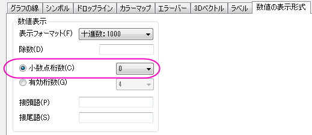
- 左側パネルでLayer1を選択します。右側パネルで平面タブを開き、YZとZXのチェックを外します。XYでは位置ドロップダウンから位置＝を選択し、パーセント/値ボックスに0を入力します。
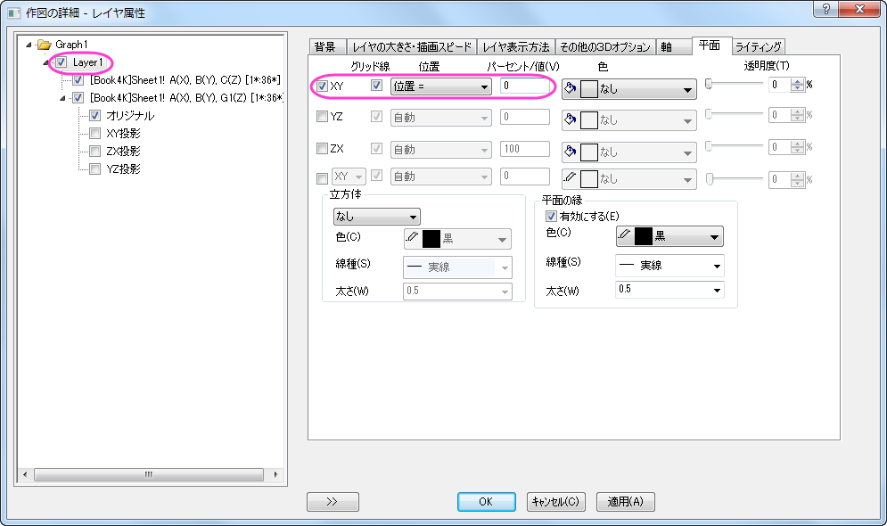
- 軸タブを開き、以下の図のように設定します。
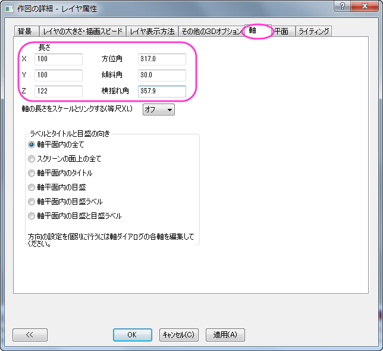
- 左側パネルでLayer1の下にある1番目のプロットを選択し、パターンタブを開きます。そこで、棒の縁と塗りつぶしの両方のカラーマッピングとしてCol("Changes
in HPI")を使用します。
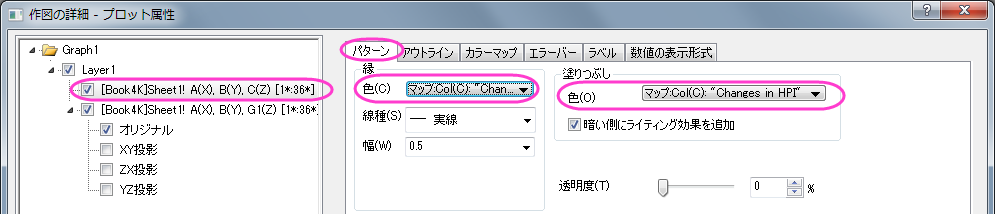
- アウトラインタブを開き、幅(%)を下図のように30 に設定します。
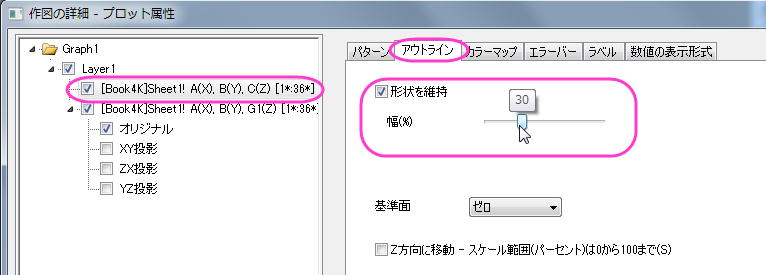
- 数値の表現形式タブに切り替え、小数点桁数を0にします。
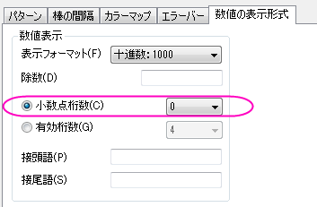
- カラーマップタブで、レベルヘッダをクリックして、レベルの設定ダイアログを開きます。以下の図のように設定します。
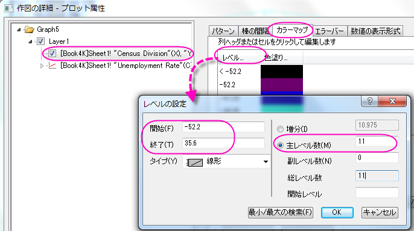
- OK ボタンをクリックして、レベルの設定ダイアログを閉じます。色塗りヘッダをクリックし、Pumpkin
Patchのパレットを設定します。OKをクリックし、塗り方ダイアログを閉じます。
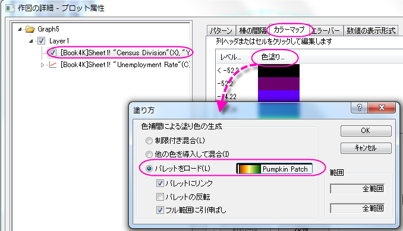
- OK ボタンをクリックして、作図の詳細ダイアログを閉じます。
- グラフウィンドウをアクティブにして、メニューから挿入：色スケールを選択します。色スケールをダブルクリックし、色階調制御ダイアログを開きます。このダイアログでは、下図のように設定を行います。
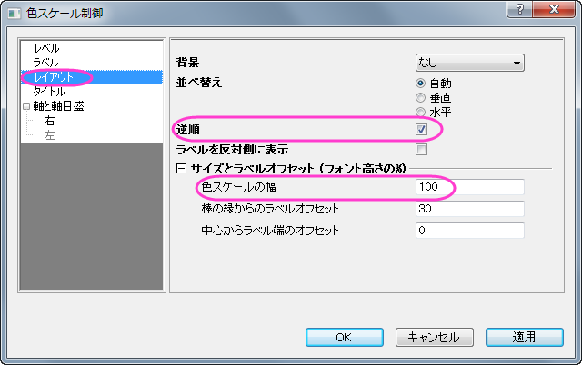
- OKボタンをクリックして、色階調制御ダイアログボックスを閉じます。レイヤアイコンを右クリックして他のプロットをコンテキストメニューからアクティブにします。そして、再びメインメニューから挿入：色スケールを選択し、もう1つ色スケールを追加します。
この色スケールをダブルクリックし、色階調制御ダイアログを開きます。このダイアログで、前のステップと同じように設定を編集します。
- タイトル「Changes in HPI」と「Unemployment Rate」を2つのカラースケールに追加します。最終的に、次のグラフのようになります。
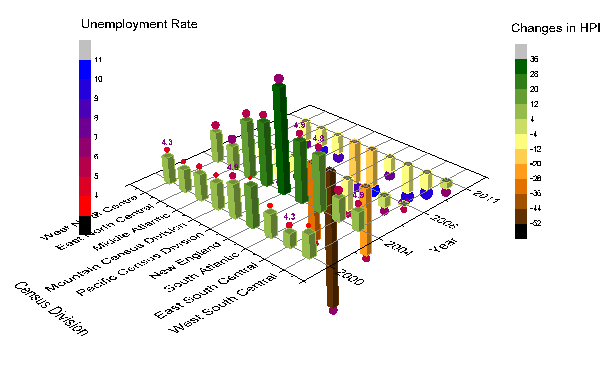
カテゴリー値をコントロールする
- 以下のステップでは元データを変えることなく、グラフに表示されている値の順番を変更します。元データブックのウィンドウを右クリックし、表示：カテゴリーと操作します。ワークシートの上部に新しい行としてカテゴリーが追加されます。「ソートなし」セルをダブルクリックして、カテゴリーダイアログを開きます。
- 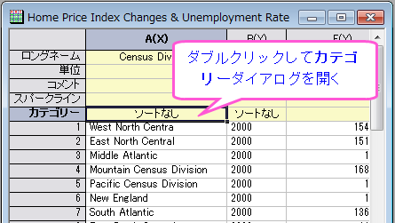
- <自動> チェックを外すと
 ボタンを使用して順番を入れ替えることが出来ます。項目の順番ごとに並べ替えると、下記のようになります。
ボタンを使用して順番を入れ替えることが出来ます。項目の順番ごとに並べ替えると、下記のようになります。
- 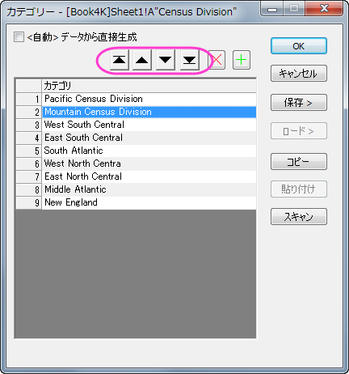
- 列Bのカテゴリーセルの「ソートなし」をダブルクリックし、カテゴリーダイアログを開きます。ソートリストで昇順を選択し、OKをクリックしてダイアログを閉じます。
- 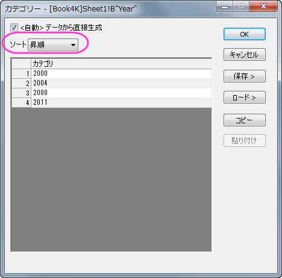
- 3D棒グラフは自動的に更新され、新しいカテゴリーの順番で表示されます。